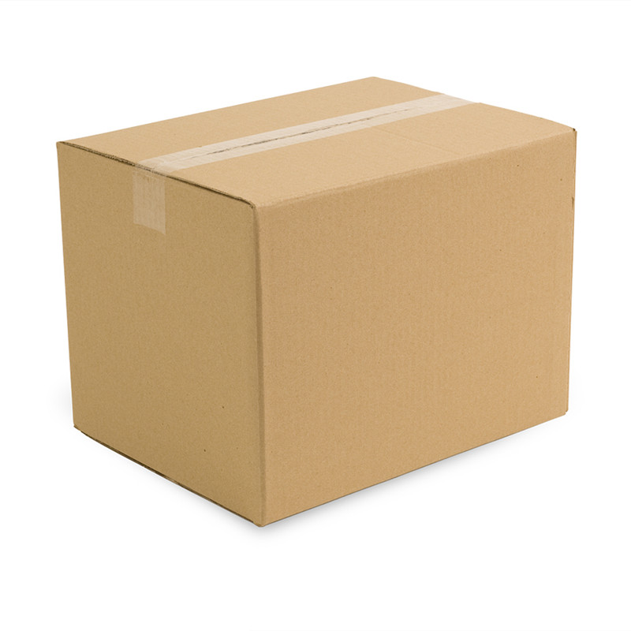
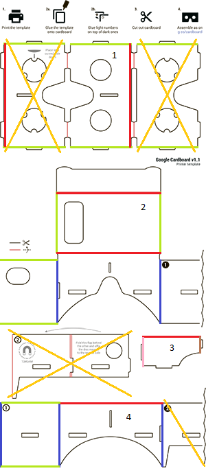
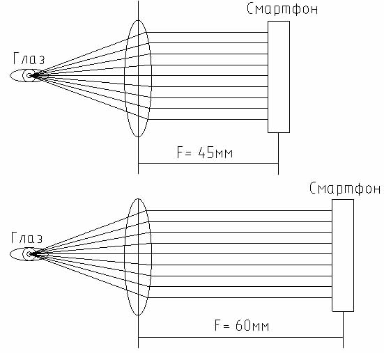
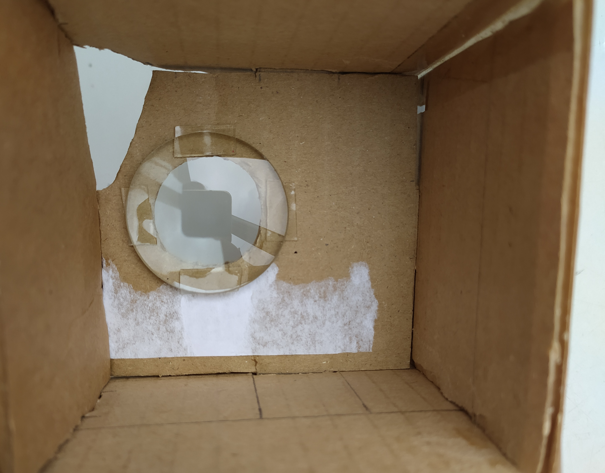

Наверх
ИНТЕРАКТИВНАЯ 3D-ГРАФИКА В ВЕБ (ВР БЕЗ ПОГРУЖЕНИЯ)
Пока ничего нет
СРЕДСТВА ДЛЯ РАЗРАБОТКИ, ИНСТРУМЕНТАРИЙ ОТ MOZILA
Пока ничего нет
АЛГОРИТМ СОЗДАНИЯ ВЕБ-ПРИЛОЖЕНИЯ СО ВСТРОЕННЫМ ВР НА ПРИМЕРЕ
Пока ничего нет
ПРАКТИЧЕСКАЯ РАБОТА: РАЗРАБОТКА КАРДБОРДА СВОИМИ РУКАМИ
Для создания кардборда требуется несколько компонентов:
1. Хороший картон
Картон должен быть 2-3 мм в толщину. При выборе картона толще или тоньше могут возникнуть проблемы с размером и со сборкой.
Отлично подходит картон от упаковки (коробка от обуви, пиццы и т.д.). Почти в любом магазине такую коробку можно попросить и ее
отдадут бесплатно.

2. Шаблон для вырезания
Компания Google выложила в свободный доступ схему кардборда, поэтому найти ее не составит труда. Можно скачать шаблон по ссылке. В данной схеме есть одна проблема - она расчитана для моделей телефона с маленьким экраном, в связи с этим необходимо править схему под размеры вашего телефона.

В практической работе мы будем делать кардборд без магнитика, поэтому детали, которые не нужны, зачеркнуты на схеме оранжевым. Кроме того, цветом выделены ребра, которые по размеру изменены:Зеленый - 7,6 см
Красный - 16,3 см
Синий - 11,1 см
Розовый - 7,4 см
Коричневый - 5,7 см
Отверстия для линз, отверстия и выпуклости для сборки не двигать, оставить неизменными (можно двигать, если уверены в своих инженерских способностях).
Обратите внимание: размеры изменены с учетом размера телефона, а также с учетом фокусного расстояния линз. Если купить другие линзы, размеры придется менять вручную.
3. Две линзы
Самый сложный пункт. Параметры линз такие: асферические, диаметр 25 мм, фокусное расстояние 45 мм. Сложность момента состоит именно в том, где такие линзы взять.
1. aliexpress.com — «google cardboard lens» - лучший вариант по цене, но длительный по времени.
2. Поиск того же в русском сегменте интернета. По скорости будет быстрее, но цена будет выше.
3. Магазины «Оптика» вашего города. Однако, в Оптике нужно говорить в других терминах. Поскольку они все измеряют в диоптриях, вам нужно будет спрашивать именно линзы с диоптриями. Сейчас мы их посчитаем: есть формула F=1/D, где F — фокусное расстояние в метрах, а D — оптическая сила линзы в диоптриях. Таким образом D = 1/F = 1/0,045 = 22,2222. В общем, нужно спрашивать линзы «+22 диоптрий». Если таковые найдутся, то их можно обточить там же до нужного диаметра, либо, диаметром побольше, но тогда и шаблон надо будет слегка изменить.
4. Магазины канцтоваров. В нем ищем подходящие по размеру лупы (т.е. увеличительные стекла), чем выше кратность, тем лучше. 10-кратные линзы должны подойти. В данном случае были куплены 10-кратные линзы в "Читай-городе".

5. Различного рода бинокли, детские игрушки, объективы, подзорные трубы и т.д. Такой способ самый ненадежный.
Идеологически верным являются первые 3 варианта, ибо они подразумевают точное совпадение с конструкцией, предложенной Google. Остальные варианты дают линзы неточные, поэтому потребуют изменения конструкции самих очков. Нагляднее показать на рисунке:

Из этой картинки следует, что чем больше фокусное расстояние, тем дальше нужно отодвигать смартфон от линзы. Таким образом, если вам достались не родные линзы, вносите изменения в конструкцию. Именно это мы и сделали.4. Магниты (необязательный пункт)
Магниты используются в качестве кнопки. Мы их использовать не будем.
5. Одежные лепучки
Продаются в любом магазине текстиля в виде ленты. Необходимы для закрепления телефона в каркасе кардборда.
6. Ножницы, канцелярский нож
7. Двусторонний скотч (толстый) Процесс сборки:
1. Распечатать шаблон
2. Прикеить на картон, вырезать
3. Приклеить линзы на двусторонний скотч к детали 1 (номер детали указан на рисунке выше) следующим образом:

4. Собрать кардборд
5. Приклеить липучки
Чтобы облегчить процесс сборки, можно ознакомиться со следующим видео.